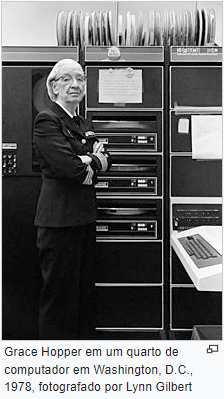
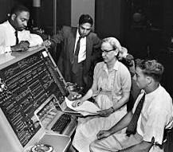

Quem foi Grace no mundo da tecnologia?
Nos anos de 1970, Hopper defendeu para que o Departamento de Defesa substituísse grandes, centralizados sistemas com redes de pequenos computadores distribuídos. Como qualquer usuário de qualquer node de computador conseguia acessar bases de dados comuns localizadas na rede.[20] Ela desenvolveu a implementação de padrões para testar sistemas de computadores e componentes, principalmente para as linguagens de programação FORTRAN e COBOL. Os testes da Marina de conformidade em relação a esses padrões levaram a convergências significativas entre os dialetos de linguagens de programação dos vendedores dos principais computadores. Já nos anos de 1980, esses teste, e a sua administração oficial, foram assumidos pelo Escritório Nacional de Padrões (NBS), conhecido atualmente como o Instituto Nacional de Padrões e Tecnologia (NIST).
Biografia
Em 1944, começou sua carreira em computação, quando trabalhou no Mark I de Harvard no time conduzido por Howard H. Aiken. Neste período, foi co-autora de três artigos científicos baseados nesse projeto. Em 1949, ela passou a participar do Eckert-Mauchly Computer Corporation e fez parte do time que desenvolveu o computador UNIVAC I. Enquanto estava no Eckert-Mauchly, começou o desenvolvimento do seu compilador. O programa dela convertia termos em Inglês para código de máquina e em 1952, tinha terminado o desenvolvimento do seu programa ligador (originalmente chamado de compilador), o qual foi desenvolvido para o Sistema A-0. Não participou efetivamente na criação da linguagem COBOL, mas de um subcomitê originado de um dos três comitês (o de Curto Prazo) propostos em uma reunião no Pentágono em Maio de 1959, que desenvolveu as especificações da linguagem COBOL. Ele era formado por seis pessoas:
- William Selden
- Gertrude Tierney da IBM
- Howard Bromberg
- Howard Discount da RCA
- Vernon Reeves e Jean E. Sammet da Sylvania Electric Products
Carreira
Em 1949, Grace Hopper tornou-se empregada da corporação Eckert-Mauchly Computer como matemática sénior e compôs a equipa de desenvolvimento UNIVAC I. Ela também serviu como diretora do UNIVAC de Desenvolvimento Automático de Programação para Remington Rand. O UNIVAC foi o primeiro computador eletrônico de larga escala conhecido a estar no mercado em 1950 e era mais competitivo em processamento de informação do que o Mark I. Quando Hopper recomendou o desenvolvimento de uma linguagem de programação que usaria palavras inteiramente em Inglês, ela "foi informada rapidamente que [ela] não conseguiria fazer isso porque computadores não entenderiam Inglês". Mesmo assim, ela persistiu. "É muito mais fácil para muitas pessoas escreverem uma declaração em Inglês do que utilizar símbolos," ela explicou. "Então eu decidi que processadores de dados deveriam conseguir escrever seus programas em Inglês, e que computadores traduziram eles para código de máquina". A sua ideia não foi aceita por 3 anos. Enquanto isso, ela publicou o seu primeiro artigo científico sobre o assunto, compiladores, em 1952. No começo dos anos 1950 a empresa em que trabalhava foi incorporada pela empresa Remington Rand e foi nesse período que desenvolveu seu compilador, que ficou conhecido como O COMPILADOR e sua primeira versão foi em A-0. Em 1952 teve um compilador operacional, o qual na época era referido como um compilador. Posteriormente, ela disse que "Ninguém acreditava nisso," e disse que "tinha um compilador rodando e ninguém o tocava. Eles me diziam que computadores apenas podiam fazer aritmética". Ela vem falar que o seu compilador "traduzia manipuladores. Poucas pessoas são realmente manipuladores de símbolos. Então decidi que processadores de dados deveriam conseguir escrever programas em inglês, e que computadores iriam traduzir traduzi-los para linguagem de máquina. Esse foi o começo de COBOL, a linguagem de computação para processadores de dados. A ideia seria que poderia dizer "subtraia a taxa do pagamento" ao invés de tentar escrever isso em código octal ou usando diversos símbolos.De 1967 até 1977, Hopper trabalhou como diretora do Grupo de Linguagens de Programação da Marinha no Escritório de Planejamento de Sistemas de Informações da Marinha e foi promovida para a posição de capitã em 1973. Ela desenvolveu validação de software para COBOL e o seu compilador como parte do programa de uniformização do COBOL para toda a Marinha.